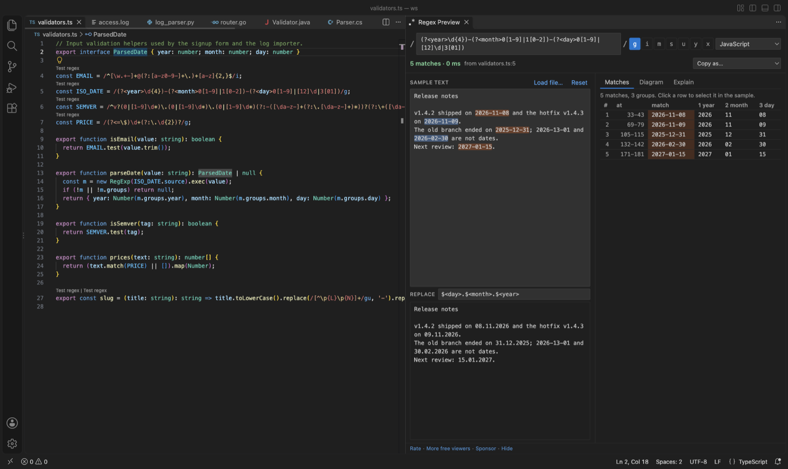

Open files in VS Code and Cursor / Code and APIs
Test a regex in VS Code
Install the free Regex Preview & Regex Tester by Zovo. A Test regex link appears above each regex in JavaScript, TypeScript, Python, Go, Rust, Java, Kotlin, C#, PHP and Ruby files. Click it and a panel opens beside the editor. Paste your own text and every match is highlighted, with a table of numbered and named groups, a replace preview and a railroad diagram.
Free, MIT license. Extension ID zovo.zovo-regex-preview, version 0.1.0. Needs VS Code 1.90.0 or newer.

Steps in VS Code
- Install Regex Preview from the Marketplace, or press Ctrl+P (Cmd+P on macOS) and run
ext install zovo.zovo-regex-preview. - Open a source file and click Test regex above a regex. The panel opens with the pattern, its flags and its flavor.
- Type or paste your text in Sample text, or click Load file to use a log or data file.
- Read the Matches, Diagram and Explain tabs. Type a replacement to see the replaced text.
- In any other file, select the pattern and run Test Selected Text as Regex, or press Ctrl+Alt+M (Cmd+Alt+M on macOS).
Steps in Cursor, Windsurf or VSCodium
- Open the Extensions view with Ctrl+Shift+X (Cmd+Shift+X on macOS).
- Search for
zovo.zovo-regex-previewand click Install. Cursor, Windsurf and VSCodium install from Open VSX, where it is published aszovo/zovo-regex-preview. - If your editor has no gallery, download the .vsix from the Open VSX page and run "Extensions: Install from VSIX...".
- Then use it the same way as in VS Code.
What Regex Preview handles
- String escapes are undone first, so
"\\d+"in Java is tested as\d+. - Replace preview in each flavor's syntax:
$1for JavaScript,\1and\g<name>for Python,${name}for Java, .NET and Go. - Warnings for syntax that works differently in Python, Java, .NET, Go/Rust and PCRE, such as Go having no lookbehind.
- Each match runs with a 1 second limit, so a pattern such as
(a+)+$that backtracks without end is stopped and VS Code keeps working. - Export the railroad diagram as SVG or PNG, and copy the pattern as JavaScript, Python, Java, Go, C#, PHP or Rust code.
What it does not do
- Patterns run in the JavaScript engine of VS Code. For other flavors the panel rewrites what it can and warns about the rest.
- Possessive quantifiers and atomic groups are tested as plain greedy ones.
- In Python,
\d,\wand\smatch non-ASCII characters by default. The panel matches ASCII and says so. - Regexes built at run time from variables get no Test regex link. Select the text and test it by hand.
In JetBrains IDEs (IntelliJ IDEA, PyCharm, WebStorm, CLion and others)
- No Zovo plugin for JetBrains IDEs. Regex Preview is for VS Code and editors built on it.
- Check RegExp (built in). IntelliJ IDEA and the other JetBrains IDEs have a built-in Check RegExp action. Put the cursor in a regex, press Alt+Enter and pick Check RegExp to test it against a sample.
- Regexp Tester. 521,815 downloads. Its description says it tests Java regular expressions, highlights matched text and shows the matched groups.
Other options
- regex101. A website with a debugger and support for many flavors. Use it when you want to share a pattern by link, and you are fine with pasting your text into a web page.
- Regex Tester (
apouuuuuuu.regex-tester, 438 installs, not on Open VSX). Its own description: "Inline regex testing with instant match feedback". Not on Open VSX. - VSCode Regex Tester (
baumundzwanzig.vscode-regex-tester, 138 installs, not on Open VSX). Its own description: "Visualize and test regular expressions directly within VSCode. Highlight matches and groups in your current file with ease." Not on Open VSX.
Install counts and Open VSX status were checked on 9 November 2026. Descriptions in quotes are the extensions' own.
Questions
Can I test a Python or Go regex, not only JavaScript?
Yes. Pick the flavor in the panel. Patterns run in JavaScript, and the panel lists any syntax that works differently in the flavor you picked, so a wrong result does not pass without a warning.
Will a bad pattern freeze VS Code?
No. Each match runs in a background worker with a 1 second limit. A pattern that backtracks without end is stopped, and the panel says so.
Is my sample text sent anywhere?
No. The panel blocks every network request. Your sample text and last pattern are kept in workspace storage on your own machine.
More about Regex Preview
Read the Regex Preview page for every feature and setting, or the source code on GitHub.
Related guides
- Open a SARIF file in VS Code
- Preview a Swagger or OpenAPI file in VS Code
- Preview an HTML file with its CSS and images in VS Code
- Take a screenshot of code in VS Code
Support this work
If this extension saves you time, you can support the work on GitHub Sponsors. Monthly tiers start at $5, and one-time tiers start at $15. Sponsorship is optional, and the tool works the same without it.